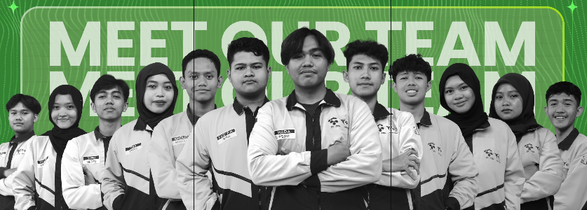

Inisiatif teknologi tepat guna kolaboratif tim PPK Ormawa E-BIO PENS dalam mengoptimalkan perlindungan lahan pertanian bawang merah melalui perangkap hama terbarukan berdaya surya, jangkauan sensor nirkabel LoRa hingga 15 KM, dan integrasi dashboard berbasis web terpusat secara real-time.
Pemaparan komprehensif alur kerja sistem light trap, implementasi jaringan LoRa di lahan terbuka, serta testimoni kelompok tani.
Integrasi teknologi energi terbarukan, telemetri jarak jauh nirkabel hemat daya, dan otomatisasi pintar berbasis sensor cuaca untuk perlindungan tanaman bawang merah yang berkelanjutan.
Memecahkan kendala klasik sinyal internet seluler di lembah persawahan Gunung Welirang melalui teknologi modulasi frekuensi rendah yang menembus halangan geografis.
Efektivitas terbukti menurunkan intensitas serangan hama ulat grayak hingga 60% serta memangkas pengeluaran semprot pestisida kimiawi dari Rp 4.500.000,- menjadi Rp 1.800.000,- per hektar per musim tanam.
Apresiasi publikasi resmi dari stasiun televisi, lembaga penyiaran radio nasional, dan warta kemahasiswaan kementerian.
Platform terintegrasi berbasis IoT dan light trap tenaga surya untuk monitoring tanaman bawang merah di Desa Sajen, Pacet, Mojokerto. Terhubung langsung dengan server sistem gapoktansumbermakmursajen.web.id/admin.
Validasi hukum, perlindungan hak kekayaan intelektual (HKI) dari Kemenkumham RI, serta legalitas rekomendasi resmi dinas terkait implementasi lapangan.
Dedikasi Kolaborasi Multidisiplin Mahasiswa & Dosen Pembimbing Politeknik Elektronika Negeri Surabaya (PENS) untuk Kemajuan Pertanian Desa Sajen.

Departemen Teknik Elektro, Informatika, Mekatronika, & Telekomunikasi